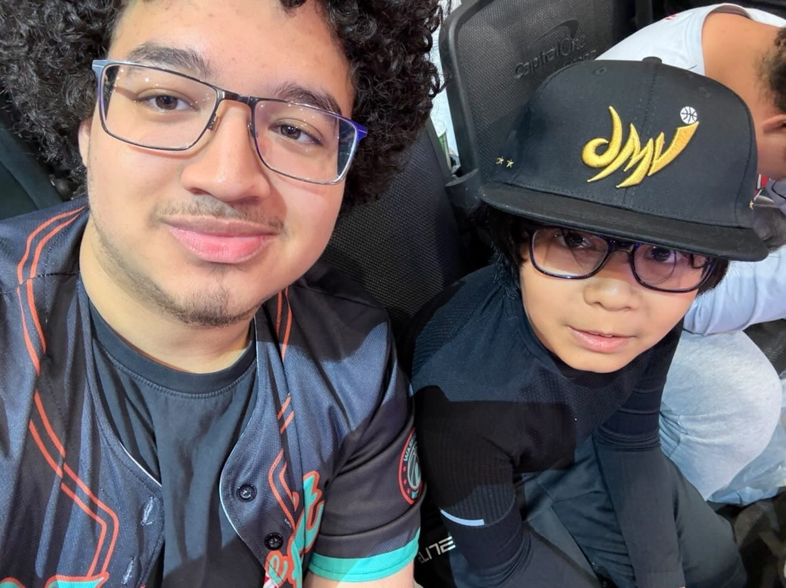
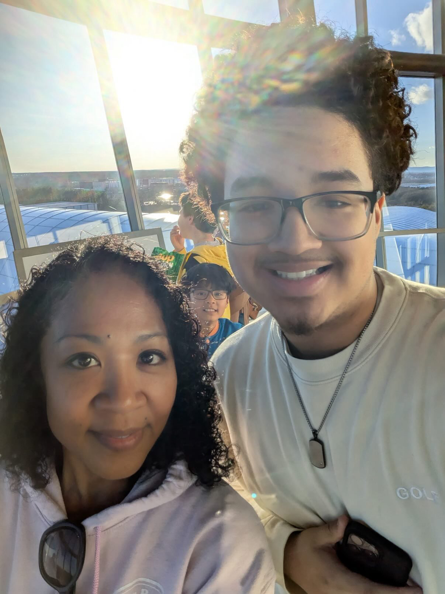

What I do for fun
Music has been part of my life longer than almost anything else. Basketball is a close second.
01Making music
For about a year now, I've been making my own music, writing, recording, and putting tracks together on my own.
It started as a way to experiment with sounds I liked from the artists I listen to most, and it's turned into something I come back to regularly. The disc player in the corner of this site plays a few of the songs that have shaped my taste and my own sound, a mix of R&B, alternative, and hip-hop. Give it a click.
02Choir & singing
I've been in choir since 4th grade, and I was singing outside of school even before that. It's been one of the most consistent parts of my life. Choir taught me how to actually listen, to my own voice, to the people around me, and to how all the parts fit together, which has carried directly into how I write and produce my own music.
03Basketball
I love playing basketball just as much as watching it, and my team is the Washington Wizards.
Whether I'm out playing or watching a Wizards game, basketball has always been one of my go-to ways to unwind. It's also something I share with family, including trips to games and watching together.

At a Wizards game with my brother.

A day out with my family, the kind of moment that recharges me before the next project, rehearsal, or game.